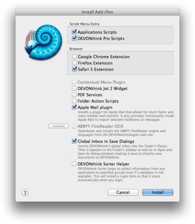

|
The DEVONthink Pro Office menu is similar to the application menu in any other Mac OS X application. It contains commands for displaying the splash screen, opening the Preferences window, accessing the Services menu, hiding and showing windows, and, of course, quitting the application.
About DEVONthink Pro Office, ...
-
About DEVONthink Pro Office: Shows information about DEVONthink Pro Office including the version number and licensing information.
-
Check for Updates: Checks if updates for DEVONthink Pro Office are available. By default, DEVONthink Pro Office checks for updates automatically; you can change the update settings in the Preferences,
Update
pane.
|
Note: When checking for updates no information is uploaded from your computer to the DEVONtechnologies server. DEVONthink Pro Office only downloads a file listing the most current versions to your Mac. This option is not available if you have purchased DEVONthink Pro Office from the Mac App Store. In this case, all updates are handled by the App Store.
|
Install Add-Ons
This command installs or reinstalls a number additional files and scripts.
|
Note: If you purchased DEVONthink Pro Office in the Mac App Store, this menu item may not be available. To open the Install Add-Ons window, click here instead.
|

The following options are available:
-
Application Scripts: Menu extra scripts extending third-party applications, e.g., Mozilla Firefox or NetNewsWire.
-
DEVONthink Pro Scripts: Menu extra scripts providing system-wide functions.
-
DEVONthink Jot Widget: Installs the DEVONthink Jot dashboard widget.
-
Safari Extension: The Safari extension Clip to DEVONthink lets you clip web pages to your database or add links with notes, similar to the
Clip to DEVONthink
bookmarklet.
-
Google Chrome Extension: Opens the Download Extras page in Google Chrome from where you can install the Chrome extension (similar to the Safari extension). You have to do this manually and follow Google's rules.
-
Firefox Extension: Opens the Mozilla Add-Ons page in Firefox where you can install the Firefox add-on (similar to the Safari extension). You have to do this manually and follow Mozilla's rules.
-
PDF Services: Adds an alias of DEVONthink Pro Office to the "PDF Services" folder so that you can "print" directly from any application to your database. Read more...
-
Folder Action Scripts: Scripts that can be "attached" to folders and are triggered when you add new items to that folder. Use them to add incoming files from a networked scanner or a folder-based workflow to your database. On Mac OS X 10.6 or later, these folder action scripts can be directly used in the Finder.
-
Apple Mail Rule Scripts: Installs the mail rule scripts for Apple Mail on OS X 10.8 or later. Choose them for Execute Script action in Apple Mail's rule editor.
-
Apple Mail Plugin: A plugin for Apple Mail that allows you to archive messages or whole mailboxes directly from within Mail.
-
ABBYY FineReader OCR: Additional resources needed for optical character recognition (for making scans searchable). As these resources seldom need to get updated, they have been separated from the application, reducing bandwidth requirements and download times when DEVONthink Pro Office is being downloaded or updated.
-
Global Inbox in Save Dialogs: Inserts DEVONthink Pro Office's global inbox into the Finder's sidebar and all "Save As" dialog windows. Use it to save directly to the inbox from any application. Note: The name of the inbox is "Inbox" regardless of your computer's language preferences.
-
DEVONthink Sorter Helper: A helper application that launches the Sorter when you log in.
Check your options and click the Install button to make DEVONthink Pro Office install or reinstall the necessary files and scripts into their repsective locations. If necessary, this command also launches the AppleScript Utility so that you can activate the global scripts menu. See chapter Scripts for more information about how to use these scripts.
In addition, this command removes obsolete files such as scripts left over from previous versions.
Options for items already properly installed are disabled and marked as "installed".
Preferences, Trash, and Cache
-
Preferences: Opens the
Preferences
.
-
Empty Trash: Moves the contents of the database trash to your computer's file system trash.
-
Empty Cache: Empties the web browser cache. This frees up space and makes sure that all, when displaying a web page, all data is freshly loaded instead of using a cached copy.
|
Note: If Index-captured items are contained in the database trash when you use Empty Trash, the option Also from disk will become available. If chosen, it will send the externally linked files to the system trash, too. Caution is advised!
|
Purchase, ...
-
Check Upgrade Options: Opens a web page that lists the upgrade options available for your copy of DEVONthink Pro Office.
-
Purchase License: Opens the DEVONtechnologies Online Shop and puts DEVONthink Pro Office into your shopping cart. If this copy of DEVONthink Pro Office is already licensed, you will be presented with the choice of buying an upgrade for your existing license or buying another full license.
-
Enter License: Use this command to enter your licence code. Make sure you enter ALL the details EXACTLY as they appear in the licence code e-mail. It is best to use copy-and-paste for transferring name, organization, and licence code from the email message to the appropriate fields. Note: Make sure that when you highlight the information to copy and paste, no spaces before or after the information are highlighted.
|
Note:
Enter License changes into License and Purchase License into Purchase License or Upgrade as soon as you have entered a valid license code (and a paid upgrade exists). Available options depend on whether you have purchased your copy in DEVONtechnologies' online shop or from the Mac App Store.
|
Services
- The Services sub-menu gives your access to special commands published by other Mac OS X applications such as TextEdit or Safari, or by services extensions such as our own WordService or CalcService. Also, DEVONthink Pro Office publishes its own services. Read more...
|